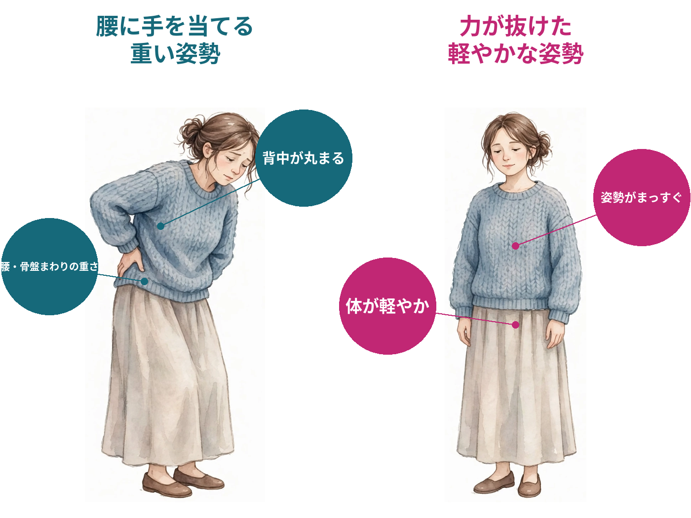

PMS・生理前の不調
美容整体ステラ・ポラリス東三国｜大阪市淀川区東三国・東三国駅徒歩5分・女性向け

生理前の重だるさを、体をゆるめて迎える準備期間に
生理前になると、腰や下腹が重い、体がむくむ、気持ちが沈む——PMS（月経前症候群）と呼ばれる不調は、多くの女性が経験するものです。ホルモンの変動に加えて、骨盤まわりの緊張や姿勢の崩れ、巡りの滞りが重なると、重だるさは強く感じられると言われています。このページでは、生理前に体が重く感じる背景と、体をゆるめて軽やかに過ごすことを目指す当サロンでのケア、ご自宅でできるセルフケアをご案内します。PMSの感じ方は人それぞれで、体の重さが中心の方もいれば、気持ちの波が中心の方もいます。毎月のことだからこそ、自分のパターンを知り、備えることが大切です。
ご予約はこちら（Coubic）こんなお悩みありませんか
- 生理前は、腰まわりが重だるく感じやすい
- 下腹が張って、ボトムスがきつく感じることがある
- 体がむくんで、夕方には脚がパンパンになる
- 気持ちが沈んだり、イライラしたりしやすい
- 肩や背中まで、体全体が固まる感じがする
- 温めると、少し楽に感じることがある
- 生理が始まると、うそのように軽くなる
当てはまる項目が多いほど、生理前の体の変化に、姿勢の崩れや巡りの滞りが重なっている目安とされています。生理前は体を責める時期ではなく、ゆるめて整える時期です。次のセルフチェックで、骨盤まわりの傾向を確かめてみましょう。
簡単セルフチェック（骨盤まわりの重さチェック）
立ったまま、腰まわりの感覚を確かめる簡単な方法です。
- 足を腰幅に開いて立ち、両手を腰に当てます。
- 骨盤を前後にゆっくり傾け、動きの滑らかさを確認します。
- 傾ける動きがぎこちない、腰まわりが重く感じる場合は、骨盤まわりの筋肉が緊張している目安と言われています。
※これは診断ではありません。ご自身の状態の傾向を知る目安としてお使いください。
PMS・生理前の不調の原因と仕組み
ホルモンの変動と体の変化
生理前は、女性ホルモンのバランスが変動する時期です。この変動に伴って、体は水分を溜め込みやすくなり、むくみや下腹の張り、体の重さを感じやすくなると言われています。図1のように、腰に手を当てたくなる重さは、骨盤まわりの状態とも関わります。個人差が大きいテーマのため、自分のパターンを知ることが第一歩です。

図1 生理前に起こりやすい体の重さと姿勢の関係、力が抜けた軽やかな姿勢のイメージ。体の状態には個人差があります。
骨盤まわりの緊張
骨盤のまわりには、姿勢を支える筋肉や、内臓を支える骨盤底筋があります。生理前は骨盤まわりが敏感になりやすく、もともとの姿勢のクセや腰の反りが重なると、腰の重だるさとして感じやすくなります。抱っこや家事で前かがみが多い方は、負担が集中しやすい時期でもあります。この時期は体に水分をため込みやすく、むくみや重さとして感じやすいことも知られています。巡りを助けるケアは、この時期の重さ対策としても役立ちます。
巡りの滞りとむくみ
筋肉の緊張が続くと血や水分の巡りが滞りやすくなり、むくみや冷えとして現れることがあります。生理前はとくに巡りが滞りやすい時期とされ、脚のむくみや体の重さにつながります。温めてゆるめることは、巡りを助ける基本のケアです。
気持ちの波との関わり
PMSでは、気持ちの落ち込みやイライラを感じる方も少なくありません。体の緊張と気持ちの緊張は関わり合い、体が固まると気持ちも張りつめやすくなると言われています。体をゆるめる時間を持つことは、気持ちの波を穏やかに過ごす助けにもなります。
セルフケアで足りる場合・サロンケアが向く場合
不調が軽く、温めたり体をほぐしたりすると楽に感じることが多い場合は、まずご自宅でのセルフケアを続けて様子を見る方法があります。一方で、生理前の重だるさが毎月つらい、腰から背中まで全身が固まる感じがする、自分ではゆるめにくいという場合は、サロンでのケアが向いている目安になります。サロンでは、骨盤まわりから全身をゆるめ、施術後に「体が軽くなった」「腰まわりがすっきりした」と感じやすい状態を目指します。どちらが正解というものではなく、周期に合わせて選ぶことが大切です。周期に合わせて通うペースのご相談もできますので、無理のない計画を一緒に考えましょう。
当サロンでのケア
当サロンのPMSケアは、「骨盤まわりから全身をゆるめ、生理前を軽やかに過ごす」ことを目指す組み立てです。まず腰まわりの状態と姿勢のクセを一緒に確認し、部位と目的に合わせて3つの手技を組み合わせます。
美容整体：骨盤の傾きと背骨のラインを整え、腰まわりにかかる負担を分散させる姿勢の土台をつくることを目的に進めます。
アロマオイルマッサージ：腰やお尻、脚まわりをオイルでゆるめ、巡りが流れやすい状態を目指します。温かみのある香りで、リラックス感を大切にしています。
もみほぐし：固まりやすい背中や肩をほぐし、全身の緊張が抜けていく感覚を目指して進めます。
ケアを通して目指すのは、こんな変化です。
- 腰まわりの重だるさがやわらぎ、動きやすい感覚へ
- 下腹まわりがすっきりしたように感じる状態へ
- 脚のむくみが流れやすく、夕方のパンパン感が軽い印象へ
- 全身の力が抜けて、深くリラックスできる時間へ
- 生理前の過ごし方のコツを知り、周期と付き合いやすい状態へ
施術の仕上げには、生理前に取り入れやすい温め方や、腰まわりをゆるめる簡単な体操もお伝えします。周期に合わせてケアを取り入れることが、毎月の波との付き合い方を楽にします。体調に合わせて、施術のペースはご相談ください。来月の波が来る前に、自分なりの備え方を一つ決めておくこともおすすめです。

施術の流れ
ご来店後、気になる部位やお悩み、ご希望の強さなどをうかがいます。完全個室のため、周りを気にせずお話しいただけます。
骨盤の傾きや腰まわりの張り、姿勢のクセなどを一緒に確認し、その日の状態に合わせた施術の進め方をご案内します。
美容整体を中心に、ご希望に応じてアロマオイルマッサージ、もみほぐしを組み合わせて進めます。強さは途中でも調整できます。
施術後の状態を確認し、ご自宅で続けやすいセルフケアのポイントをお伝えします。次回の目安についても、ご希望があればご案内します。
料金
| コース | 通常価格 | キャンペーン価格（12/25まで） |
|---|---|---|
| 80分 | 8,000円 | 3,000円 |
| 100分 | 10,000円 | 4,000円 |
| 120分 | 12,000円 | 5,000円 |
クリスマスキャンペーンは12月25日まで、ご新規様もリピーターの方も対象です。施術内容は当日の状態とご希望に合わせて組み立てます。
ご自宅でできるセルフケア
- 骨盤ゆらし：仰向けで膝を立て、骨盤を前後にゆっくりゆらします。各10回ほど、寝る前の習慣にすると続けやすくなります。
- お腹と腰を温める：腹巻きやカイロでお腹と腰を温めます。温めることは、巡りを助ける基本のケアです。
- 脚の巡りを助ける体操：足首を大きく回す、ふくらはぎを下から上へやさしくさするなど、むくみ対策の習慣を取り入れます。各10回が目安です。
- 肩・背中のストレッチ：両手を組んで前に伸ばし、背中を丸めて肩甲骨の間を広げます。20〜30秒を目安に、こまめに行ってください。
ご自宅でのケアに：セルフケア資料ライブラリ（無料）
このお悩みに合わせたセルフケアの考え方を、無料の資料ライブラリでご紹介しています。
セルフケア資料ライブラリを開く →
受診の目安
生理前の不調が日常生活に大きく支障をきたす場合や、気持ちの落ち込みが強い場合は、婦人科など医療機関への相談をおすすめします。また、生理の様子に大きな変化がある場合も、施術の前に医療機関でご相談ください。
よくある質問
Q. 初めてでも大丈夫ですか？
はい。当サロンは完全予約制・完全個室で、1日3組までのご案内です。最初にカウンセリングで周期の様子や気になる部位をうかがい、無理のない内容から始めます。施術の前後で「腰が軽くなった」「体がゆるんだ」といった感覚の違いを一緒に確認しながら進めますので、初めての方も安心してご利用いただけます。
Q. 施術は痛いですか？
強さは、ご希望をうかがいながら調整します。生理前は体が敏感になりやすい時期のため、やさしい圧を基本に進めます。感じ方には個人差がありますので、施術中も遠慮なくお声がけください。
Q. コースはどう選べばいいですか？
80分・100分・120分のコースがあり、ケアしたい部位の広さやお時間のご都合に合わせて選べます。骨盤まわりから背中、脚までゆっくり整えたい方には、100分が選ばれることが多いコースです。迷われる場合は、ご予約の際にお気軽にご相談ください。
Q. 場所と予約方法を教えてください。
大阪市淀川区東三国、東三国駅から徒歩5分です。完全予約制のため、予約サイト（Coubic）またはLINE公式アカウントからご予約をお願いしています。
Q. 男性も受けられますか？
当サロンは女性向けのため、男性の方は、同じ東三国の男性専用整体院「北辰堂」をご案内しています。
施術者について
平賀建人（施術歴30年）
鍼灸師・登録販売者・アロマセラピスト・パーソナルトレーナーの資格を持ち、美容整体を中心に、アロマオイルマッサージ、もみほぐしを、その日の状態とご希望に合わせて組み合わせて施術します。このページの内容は、施術者の知識と経験をもとに作成しています。

料金・ご予約
ご新規様もリピーターの方も 12/25まで
80分 3,000円／100分 4,000円／120分 5,000円
通常価格は80分8,000円／100分10,000円／120分12,000円です。施術内容はご希望に合わせて組み立てます。
営業時間：月〜土 17:00〜23:00／日 10:00〜23:00（完全予約制）｜電話：080-2468-3086
大阪府大阪市淀川区東三国2丁目25番4号101（東三国駅徒歩5分）